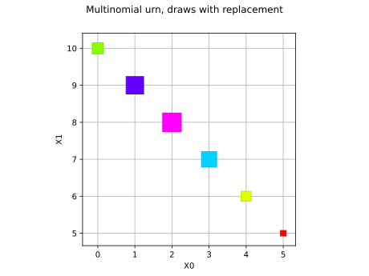
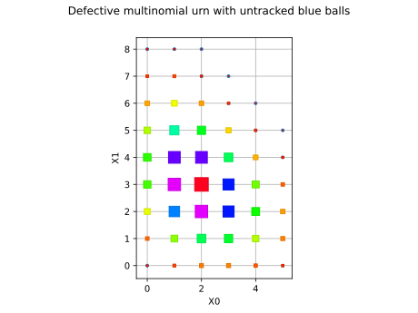
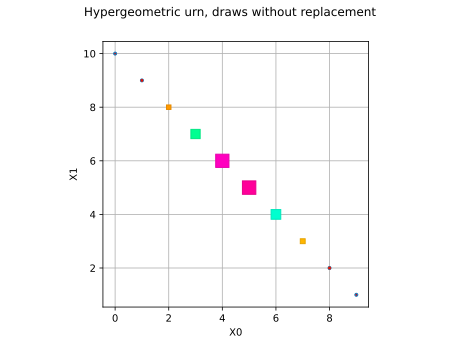
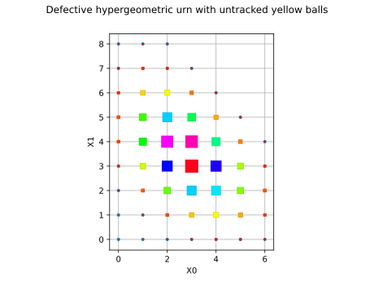
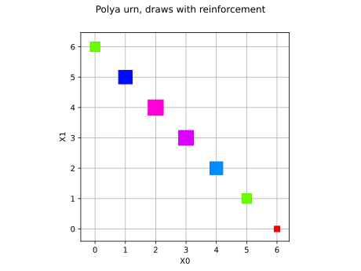
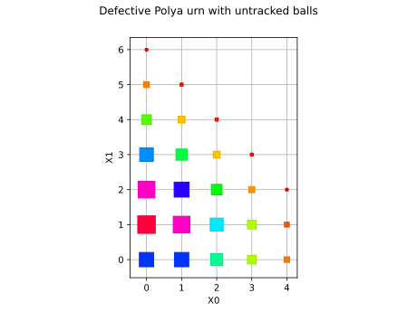
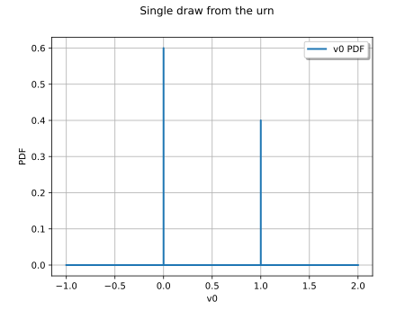

Note
Go to the end to download the full example code.
Multivariate discrete distributions¶
In this example we present the multivariate discrete distributions of the library as urn models with colored balls:
Multinomial: draws with replacement,MultivariateHypergeometric: draws without replacement,MultivariatePolya: draws with reinforcement,FiniteDiscreteDistribution: user-defined support.
All these urn models share the same convention, mimicking Multinomial:
only a subset of the colors has to be tracked.
The untracked balls form an implicit rest category, so that in general
![X_1 + \dots + X_d \leq N]() .
The classical definition (
.
The classical definition (![X_1 + \dots + X_d = N]() ) is recovered when the
tracked colors cover the whole urn.
In particular the 1D case reduces to
) is recovered when the
tracked colors cover the whole urn.
In particular the 1D case reduces to Binomial,
Hypergeometric and to the beta-binomial distribution respectively.
import openturns as ot
import openturns.experimental as otexp
import openturns.viewer as otv
Draws with replacement: the multinomial urn¶
An urn holds balls in two colors with probabilities 0.2 (red) and 0.8 (green). We draw 10 balls with replacement and count how many red and green balls we observe. Both colors are tracked and the probabilities sum to one, so we are in the classical case and red + green = 10.
distribution = ot.Multinomial(10, [0.2, 0.8])
print(distribution)
sample = distribution.getSample(5)
print(sample)
graph = distribution.drawPDF()
graph.setTitle("Multinomial urn, draws with replacement")
view = otv.View(graph)
view.getAxes()[0].set_aspect("equal", adjustable="box")

Multinomial(n = 10, p = [0.2,0.8])
0 : [ 2 8 ]
1 : [ 4 6 ]
2 : [ 1 9 ]
3 : [ 0 10 ]
4 : [ 1 9 ]
If the urn also holds blue balls with probability 0.5 that we do not track, only the red and green balls are counted: red + green <= 10. The 1D defective case reduces to the binomial distribution: the number of red balls follows Binomial(10, 0.2).
distribution_def = ot.Multinomial(10, [0.2, 0.3])
print(distribution_def)
marginal = distribution_def.getMarginal(0)
print(marginal)
print("PDF at 2 red and 3 green balls:", distribution_def.computePDF([2, 3]))
print("PDF at 2 red balls:", marginal.computePDF([2]))
graph = distribution_def.drawPDF()
graph.setTitle("Defective multinomial urn with untracked blue balls")
view = otv.View(graph)
view.getAxes()[0].set_aspect("equal", adjustable="box")

Multinomial(n = 10, p = [0.2,0.3])
Binomial(n = 10, p = 0.2)
PDF at 2 red and 3 green balls: 0.08505000000000001
PDF at 2 red balls: 0.301989888
Draws without replacement: the hypergeometric urn¶
The same urn now holds 10 red and 12 green balls (22 balls in total). We draw 10 balls without replacement and track red and green. Here the tracked colors cover the whole urn, so red + green = 10.
distribution = otexp.MultivariateHypergeometric(10, [10, 12])
print(distribution)
sample = distribution.getSample(5)
print(sample)
graph = distribution.drawPDF()
graph.setTitle("Hypergeometric urn, draws without replacement")
view = otv.View(graph)
view.getAxes()[0].set_aspect("equal", adjustable="box")

MultivariateHypergeometric(n = 10, colors = [10,12], total = 22)
[ X0 X1 ]
0 : [ 3 7 ]
1 : [ 5 5 ]
2 : [ 6 4 ]
3 : [ 6 4 ]
4 : [ 7 3 ]
If the urn also holds 13 yellow balls that we do not track, the total population is 35 while the tracked colors sum to 22: red + green <= 10. The 1D defective case reduces to the univariate hypergeometric distribution.
distribution_def = otexp.MultivariateHypergeometric(10, [10, 12], 35)
hyper = ot.Hypergeometric(35, 10, 10)
print(distribution_def)
print("PDF at 3 red and 4 green balls:", distribution_def.computePDF([3, 4]))
print("PDF at 3 red balls:", distribution_def.getMarginal(0).computePDF([3]), hyper.computePDF([3]))
graph = distribution_def.drawPDF()
graph.setTitle("Defective hypergeometric urn with untracked yellow balls")
view = otv.View(graph)
view.getAxes()[0].set_aspect("equal", adjustable="box")

MultivariateHypergeometric(n = 10, colors = [10,12], total = 35)
PDF at 3 red and 4 green balls: 0.09253979678634561
PDF at 3 red balls: 0.3142182688083362 0.3142182688083362
Draws with reinforcement: the Polya urn¶
The urn starts with 3 red and 4 green balls (concentrations).
After each draw the ball is replaced together with c = 1 additional ball
of the same color. We draw 6 balls and track red and green.
distribution = otexp.MultivariatePolya(6, [3.0, 4.0], 1.0)
print(distribution)
sample = distribution.getSample(5)
print(sample)
graph = distribution.drawPDF()
graph.setTitle("Polya urn, draws with reinforcement")
view = otv.View(graph)
view.getAxes()[0].set_aspect("equal", adjustable="box")

MultivariatePolya(n = 6, alpha = [3,4], c = 1, total = 7)
[ X0 X1 ]
0 : [ 2 4 ]
1 : [ 1 5 ]
2 : [ 1 5 ]
3 : [ 4 2 ]
4 : [ 2 4 ]
As for the other urns, untracked colors are allowed: with a total concentration of 12 the 1D defective Polya is a beta-binomial distribution on 0..6.
distribution_def = otexp.MultivariatePolya(6, [2.0, 3.0], 1.0, 12.0)
marginal = distribution_def.getMarginal(0)
print(marginal)
print("support size:", distribution_def.getSupport().getSize())
graph = distribution_def.drawPDF()
graph.setTitle("Defective Polya urn with untracked balls")
view = otv.View(graph)
view.getAxes()[0].set_aspect("equal", adjustable="box")

MultivariatePolya(n = 6, alpha = [2], c = 1, total = 12)
support size: 28
User-defined support: the FiniteDiscreteDistribution urn¶
A single draw from an urn holding 6 red and 4 blue balls is a categorical
experiment. Encoding red by 0 and blue by 1, the draw follows a
FiniteDiscreteDistribution with weights given by the
ball counts (normalized automatically). It is the single-draw version of
the multinomial urn above.
single = ot.FiniteDiscreteDistribution([[0], [1]], [6.0, 4.0])
print(single)
print("P(red) =", single.computePDF([0]))
print("P(blue) =", single.computePDF([1]))
graph = single.drawPDF()
graph.setTitle("Single draw from the urn")
view = otv.View(graph)

FiniteDiscreteDistribution({x = [0], p = 0.6}, {x = [1], p = 0.4})
P(red) = 0.6
P(blue) = 0.4
Display all figures